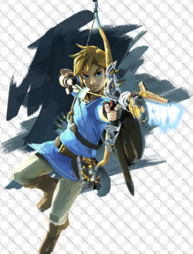

Est une série de jeux vidéo d’action-aventure produite par Nintendo et créée par les concepteurs japonais Shigeru Miyamoto et Takashi Tezuka. De 1986, avec le jeu The Legend of Zelda paru sur NES, à 2017 avec The Legend of Zelda: Breath of the Wild sorti sur Nintendo Wii U et Nintendo Switch, dix-neuf jeux font officiellement partie de la saga. Plusieurs jeux dérivés ont également vu le jour. The Legend of Zelda a principalement été inspiré à Shigeru Miyamoto par ses promenades dans la campagne environnant sa maison d'enfance à Kyoto, où il a vu des forêts, des lacs, des grottes et des villages campagnards. Selon Miyamoto, une des expériences les plus mémorables fut la découverte d'une caverne au milieu des bois. Après avoir un peu hésité, il est entré dans la caverne et l’a explorée à l’aide d'une lanterne. Ce souvenir a clairement influencé le travail de Miyamoto, car l’exploration de cavernes est une partie importante des Zelda. La mythologie celtique, la mythologie nordique et la mythologie japonaise ont autant influencé la série que la culture médiévale occidentale. Miyamoto considère The Legend of Zelda comme un « jardin miniature » amené à la vie avec lequel on peut jouer.
Link est un personnage imaginaire et le principal héros de la série de jeux vidéo The Legend of Zelda de Nintendo. Créé par Shigeru Miyamoto, The Legend of Zelda est un des noyaux durs de Nintendo. En 2007, plus de 47 millions d’exemplaires ont été vendus à travers le monde1. La première apparition de Link date de 1986 dans le jeu The Legend of Zelda. Le personnage a été représenté dans d’autres jeux vidéo de Nintendo, mais également dans d’autres produits commerciaux dérivés comme des mangas ou encore dans un programme d’animation à la télévision. Link est dépeint comme un garçon hylien du pays imaginaire nommé Hyrule. À l’origine jeune épéiste, son identité, apparence et rôle change d’un jeu à l’autre. Son âge varie suivant chaque jeu, se situant généralement entre dix et vingt ans. Toutefois, certaines choses restent immuables : son équipement de base est toujours identique d'un jeu à l'autre (excepté dans Breath of the Wild), équipement constitué d’une tunique et d’un bonnet vert, d’une paire de bottes, d’une épée et d’un bouclier. Par la suite, Link acquiert au cours du jeu un arsenal important et hétéroclite : grappin, boomerang, bombes, arc avec plusieurs types de flèches, ocarina, masques, tuniques, bottes, masse, épées plus puissantes

Eiji Aonuma est actuellement la personne qui s'occupe des jeux Zelda . Aonuma fait ses études à l'Université nationale des Beaux-Arts et de la Musique de Tokyo puis obtient son diplôme en 1988. Peu après il est embauché dans la société Nintendo, qui développe des jeux vidéo pour console. Il est intégré à l'unité Nintendo Research and Development 21 de Masayuki Uemura qui se concentre sur le développement matériel comme les consoles ou les accessoires. Néanmoins la section crée quelques rares jeux vidéo. Aonuma prend part au développement du premier jeu vidéo de l'unité, NES Open Tournament Golf qui sort en 1991. En 1996 il tient la place de directeur sur le deuxième jeu de l'équipe, un jeu de rôle intitulé Marvelous: Mouhitotsu no Takarajim, très influencé par The Legend of Zelda: A Link to the Past. Peu après le manager général du studio Nintendo EAD Shigeru Miyamoto l'appelle pour travailler en tant que codirecteur sur The Legend of Zelda: Ocarina of Time, le nouvel opus de la série The Legend of Zelda, le premier en 3D et sur la nouvelle console de Nintendo, la Nintendo 64. Initialement prévu peu après la sortie de la console, le projet prend du retard et le producteur Shigeru Miyamoto augmente la taille de l'équipe et fait appel à quatre directeurs pour mener le projet à terme : Toru Osawa, Yoichi Yamada, Yoshiaki Koizumi et Aonuma. Il est chargé de la création des donjons. À la sortie du jeu, la critique est unanime et le jeu reste aujourd'hui le produit le mieux noté de l'histoire des jeux vidéo.